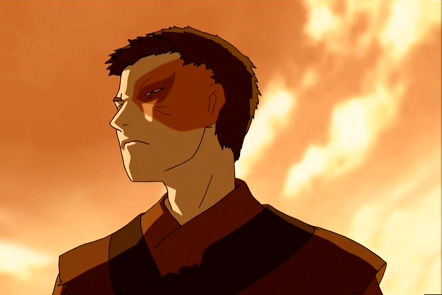

Welcome to the Group page for Team Avatar at Pitt Greensburg!
The Avatar Project is a one semester project that involved our team creating a website based on the Nickelodeon hit TV series, “Avatar: The Last Air Bender.” This series is about Avatar Aang joining forces with his friends to master the four elements and restore balance to their world. One of the main characters, Zuko, was first an enemy, but then redeemed himself throughout the show. Our goal for this project was to focus on this redemption arc that Zuko goes through. By searching through the episode transcripts at http://avatar.fandom.com, we were able to mark up the important points of each episode that contributed to the progress of Zuko’s redemption arc. With this, we were then able to create timelines for each Book displaying this information. Finally, the Avatar Project is born!
A special thank you to Dr. William H. Campbell and team instructor Shannon Dunn for assisting us with this project, it would not have been possible without you!
Transcripts from avatar.fandom.com